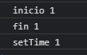
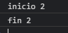
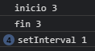
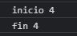
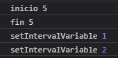

Math
1.- El setTimeout
Se ejecuta una sola vez con el tiempo estimado, que es de 3s (3000)
Usando:
console.log('inicio 1');
setTimeout(() => {
console.log('setTime 1');
}, 3000);
console.log('fin 1');

2.- Borrar o detener el setTimeout
Hay que darle una variable
Usando:
console.log('inicio 2');
let temporizador = setTimeout(() => {
console.log('setTimeVariable');
}, 3000);
clearTimeout(temporizador);
console.log('fin 2');

3.- El setInterval
Se ejecuta indefinidamente con el tiempo estimado, que es de 3s (3000)
Usando:
console.log('inicio 3');
setInterval(() => {
console.log('setInterval 1');
}, 3000);
console.log('fin 3');

4.- Borrar o detener el setInterval
Hay que darle una variable
Usando:
console.log('inicio 4');
let temporizadorInterval = setInterval(() => {
console.log('setIntervalVariable');
}, 3000);
clearInterval(temporizadorInterval);
console.log('fin 4');

5.- Borrar o detener el setInterval con condición
Si se repite dos veces se detiene o borra
Usando:
console.log('inicio 5');
let cont = 0;
let temporizadorIntervalV1 = setInterval((elemn, index) => {
cont++;
console.log('setIntervalVariable', cont);
if (cont === 2) {
clearInterval(temporizadorIntervalV1);
}
}, 3000);
console.log('fin 5');
